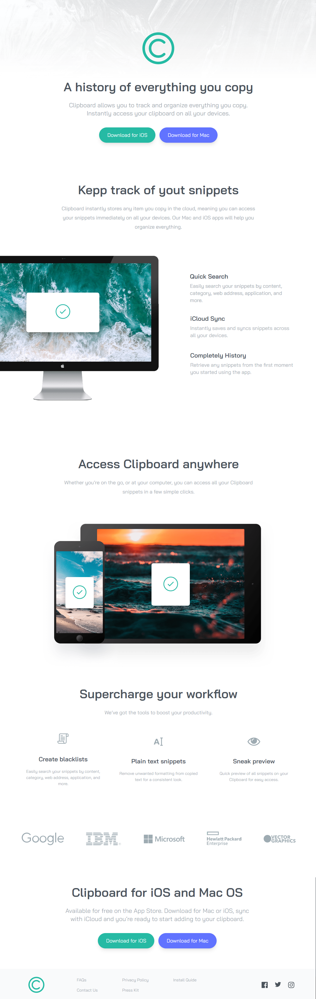
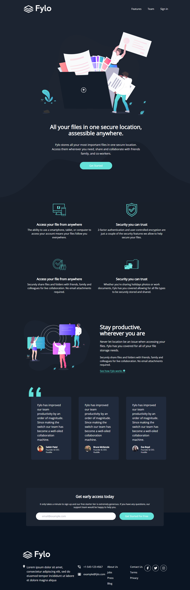
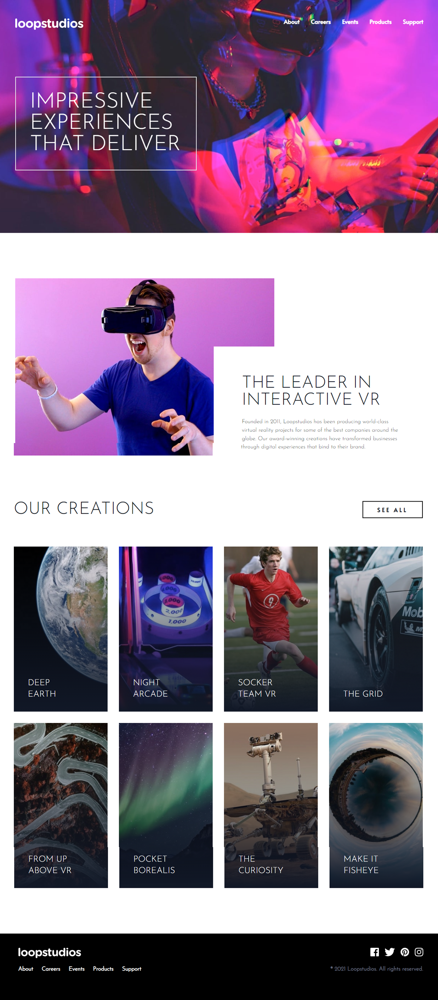
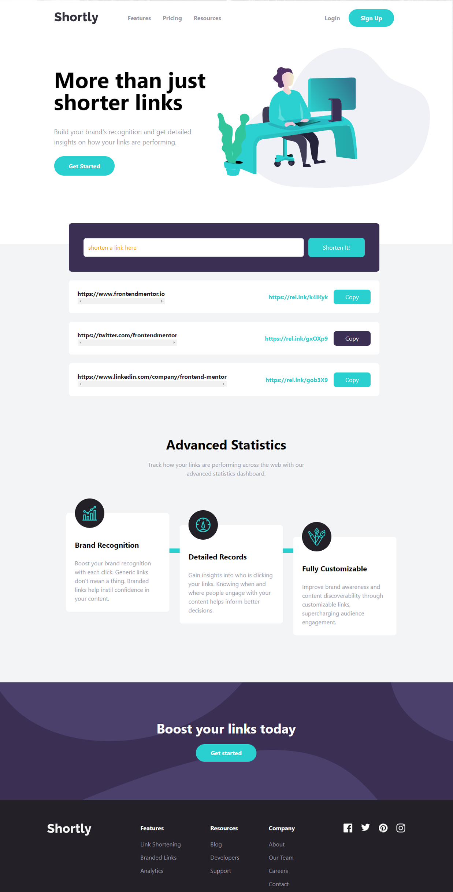
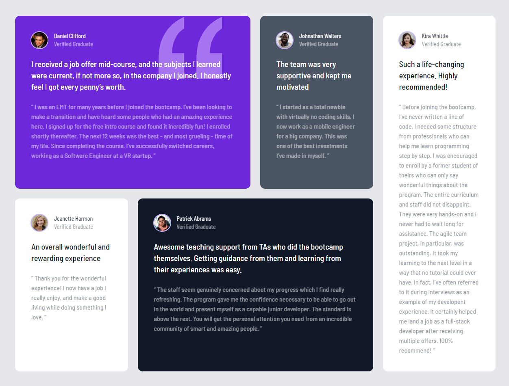

Landing Page
Bookmark
Browser extension landing page with feature tabs, FAQ accordion, and responsive navigation.
View Project →
Landing Page
Clipboard
App landing page with download CTAs, feature sections, and stats. Based on a Frontend Mentor challenge.
View Project →
Landing Page
Fylo
Dark-themed landing page with dark/light mode toggle, feature cards, and signup form.
View Project →
Landing Page
Loopstudios
VR company landing page with interactive gallery grid, overlay navigation, and hover effects.
View Project →
Landing Page
Shortly
URL shortening service landing page with statistics cards, link form, and responsive menu.
View Project →
Grid Layout
Testimonial Grid
CSS Grid layout featuring testimonial cards with quotes, avatars, and color-coded sections.
View Project →